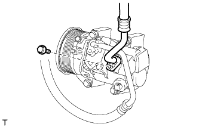
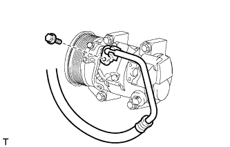
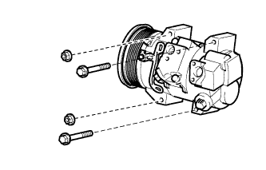
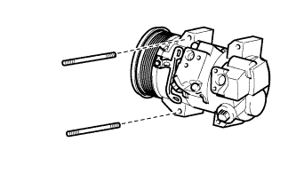

Compressor Assembly (Engine Type 2AZ-FE) Removal |
| 1. Refrigerant HFC-134a [R134a] Recovery |
)| 2. Remove Front Tire RH |
| 3. Remove Engine Under Cover Rear RH |
| 4. Remove Radiator Upper Air Deflector |
Remove the 8 clips and the radiator upper air deflector.
| 5. Remove Fan & Alternator V Belt |
 |
Using SST, slowly turn the V-belt tensioner clockwise.
Remove the V-belt from each pulley and slowly return the tensioner.
| 6. Disconnect Suction Hose Sub-assembly |
 |
Remove the bolt and disconnect the suction hose.
Remove the O-ring from the suction hose.
| 7. Disconnect Discharge Hose Sub-assembly |
 |
Remove the bolt and disconnect the discharge hose.
Remove the O-ring from the discharge hose.
| 8. Compressor Assembly (with Pulley) Removal |
Disconnect the connector.
 |
Remove the 2 bolts and 2 nuts.
 |
Using a Torx socket wrench (E8), remove the 2 stud bolts and remove the compressor assembly (with pulley).